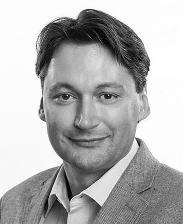
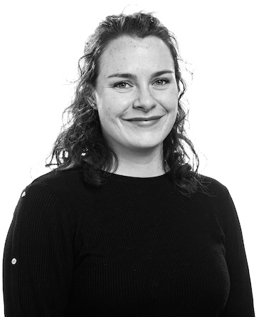
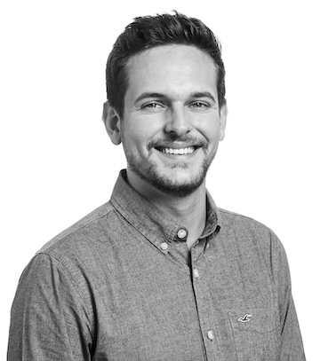

Who are we?
We are a small team consisting of three curious people interested in developing innovative solutions to problems in a diverse range of use-cases. We love to tackle big problems that require new approaches and live by the motto “If you can think it, you can achieve it”. We’d love to take this opportunity to introduce ourselves:
Dr. Manuel Renold - Team Lead

As a physicist, mathematician, computer scientist , former climatologist and simulation oceanographer, Manuel’s major interest are simulated worlds, hyper complex systems, and deep learning. His today’s job makes him an expert in data analysis, simulation technologies, aviation researcher, and an enthusiastic reinforcement machine learner. He thinks a healthy environment, smart transport systems and AI fits well together.
Julia Usher - PhD Candidate

Julia began her academic career in 2017 with the beginning of her BSc. in Aviation at the Zurich Univeristy of Applied Sciences. It was after her Bachelor’s that she began working as a research assistant in Manuel’s team while completing her Master’s in Engineering from 2020-2023, deepening her knowledge of statistical methods, optimisation and discovering a fascination for AI and ML. The culmination of three years of employment and studies was her Master Thesis, in which she developed a proof of concept for a reinforcement learning agent for the scheduling of ground handling equipment, proving the validity of the method proposed in the brAIght project. The next step in her career is now underway - she will stay on in Manuel’s team as a PhD Candidate, working primarily for the AI4REALNET project in the field of human-machine co-learning and the continuation of her Master’s Thesis in the brAIght project.
After a day’s work, you’re most likely to find Julia with a volleyball in hand or - as the green thumb of the group - taking care of her urban jungle at home. The weekends
of the warmer months are mostly spent outside on “relaxing” alpine hikes and nights sleeping outside under the stars. While still hiking in winter, she’s more likely to
be spotted on her skis (or next to them).
Janik Vollenweider - Senior Researcher

Janik completed his BSc. in Aviation in 2020 and continued his Master in Engineering with specialisation in Aviation from 2020 to 2023. He gained professional experience in the transport industry at SBB and during his bachelor’s degree through an internship at Zimex Aviation followed by part-time employment. During his master’s degree, Janik started as a research assistant in Manuel’s team. He mainly focused on the development of the Vertiport simulation in cooperation with Wisk and Aurora Flight Sciences. Through his knowledge of agent-based simulation, acquired during his bachelor thesis, he also assisted in lectures on passenger flow simulations at airports. He demonstrated his knowledge of airline profit in a project thesis during his master’s degree and was involved in the underlying research within the group.
As the drone nerd in the group, he focused his master’s thesis on developing a high-fidelity UAV simulation to validate operational flight procedures that require a permit to fly. Together with the start-up incluas, he explored new ways to reduce the costs of real-flight tests required for drone operations that require a flight approval. When he’s not sitting behind his desk, he’s repairing and tuning his FPV drones or enjoying the freedom of pushing them through tiny gaps or flying them at speeds of up to 120 km/h within half a metre of the ground… a lot of crashes included. True to the motto “Fail Fast, Fail Often!”
Oliver Carmignani - Research Assistant
ONLY_HERE_AS_SPACER
ONLY_HERE_AS_SPACER
ONLY_HERE_AS_SPACER
ONLY_HERE_AS_SPACER
Feel free to visit Oliver on LinkedIn.